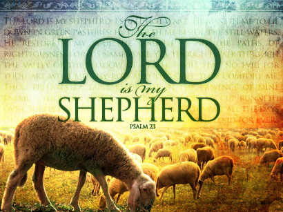
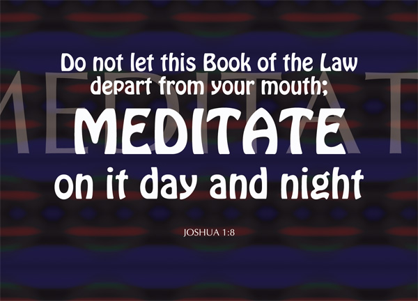
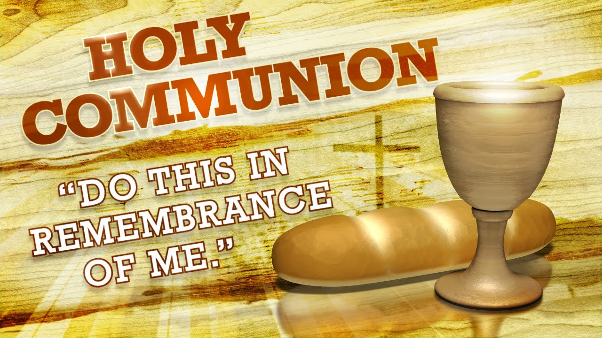

Christianity 101
Praise The Lord!
Thank You Father God! Father of all creation! Father we bless Your Name! King of Kings! Lord of Lords!!
I AM THAT I AM! Ancient of Days!! Alpha, Omega, Beginning, Ending, Almighty God, Wonderful, Counsellor, Mighty God, Everlasting Father, Prince of Peace! Glory be to Your Holy Name! Glory be to Your Holy Name! Father, Glory be to Your Holy Name!

Powerful Healing Prayer
Hear what God says in 3 John : 2: "Beloved, I wish above all things that thou mayest prosper and be in health, even as thy soul prospers.”
Every born again child of God has a covenant of divine health with the Father, and you have a right to this covenant. God said; “..I am the Lord that healeth thee”

Psalm 23
Yea, though I walk through the valley of the shadow of death, I will fear no evil; For You are with me; Your rod and Your staff, they comfort me

21 Powerful Confession!
I’ve seen God’s Word change self-centered, narcissistic men who abuse and misuse women into godly husbands, wonderful dads, and upstanding citizens in the community.
God’s Word will never change your life until you let it become personal. It’s not about your neighbour, your friend, your spouse, or the stranger down the street. God’s Word must be applied to your life. The Bible won’t become dynamic until it becomes specific.
According to Jesus Christ Our Lord, if you have faith; you will do something. You will speak! Faith and authority are exercised through words. You must open your mouth and speak in line with what God says.

World Peace is Possible
We are deeply aware of the tragic cycle of continuing violence around the world. As we each find our own way through the complex maze of inner feelings, it is useful to know that we are not alone in our struggles or in our hopes.
It is possible to have peace in this world...

Wisdom from God
Wisdom is laying hold on the ways of God, God’s approach to every issue of life. It is knowing from God’s Word which way to go and how to handle situations to make them produce desired results. Wisdom is knowing how to make it in life!
I want to define supernatural wisdom as the supernatural ability to bring solutions to dark matters too difficult for the human mind.
Through wisdom is an house builded; and by understanding it is established: Proverbs 24:3
The Power of the Tongue
Death and life are in the power of the tongue, and those who love it will eat its fruit. Proverbs 18:21

Christian Meditation
"Do not let this Book of the Law depart from your mouth; meditate on it day and night, so that you may be careful to do everything written in it". Ps 19:14
(Ps 119:97)I have more insight than all my teachers, for I meditate on your statutes.
“And I am certain that God, who began the good work within you, will continue his work until it is finally finished on the day when Christ Jesus returns.” (Philippians 1:6)

Holy Communion
Then Jesus said unto them, Verily, verily, I say unto you, Except ye eat the flesh of the Son of man, and drink his blood, ye have no life in you. For my flesh is meat indeed, and my blood is drink indeed. He that eats my flesh, and drinks my blood, dwells in me, and I in him. John 6:53, 55-56
Deliverance From Curses
If you are afflicted by sickness or any kind of disease or you are not just getting the best from your Christian walk with God. You might want to consider generational curses and demonic activities operating in your life. the following simple but powerful prayer will set you free from the damaging effect of every demonic activities in your life.
Powerful Christian Confession
I want to tell you the only real secret to getting ahead in this world. It's simple. Put the Word of God first place in your daily life. You see, the Bible is not just a textbook, a storybook, or a history book. It's a handbook for living. It's the wisdom of Almighty God written down so that you can apply it to your everyday circumstances.
This is Revival
Revival is an “awareness of God’ that grips the whole community, and the roadside, the tavern, as well as the church, become the places where men find Christ.